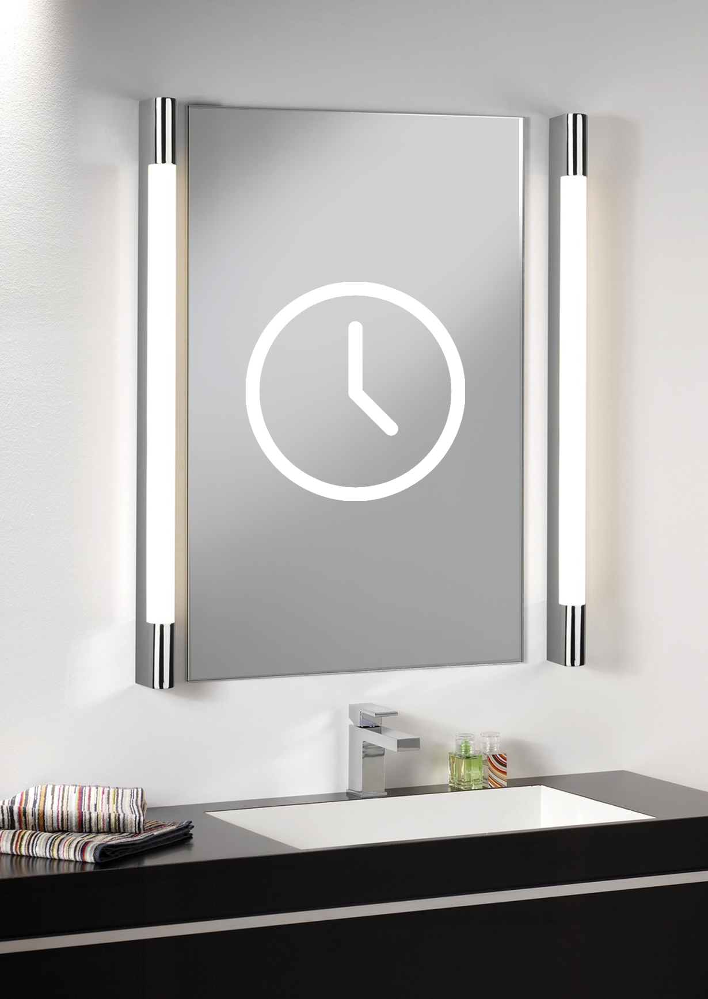
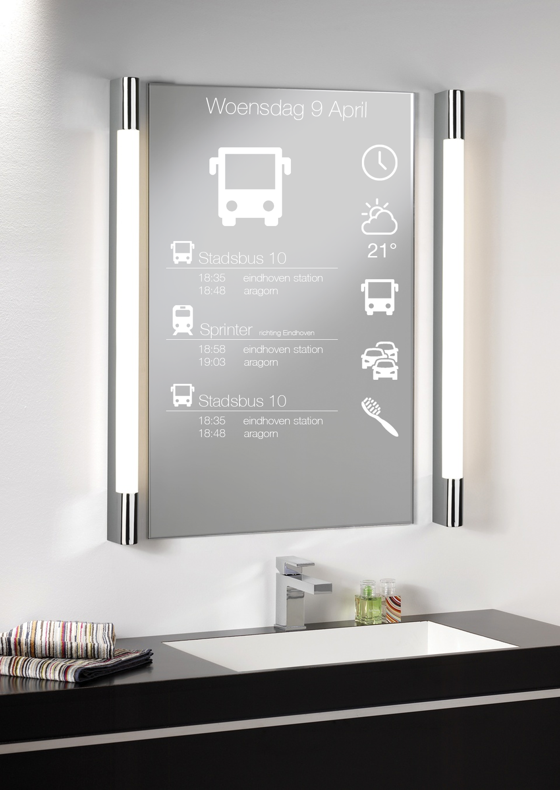

Good morning concept
Concept
Ons idee is om een badkamerspiegel te maken. Je staat namelijk iedere ochtend in de badkamer voor de spiegel. Je poetst bijvoorbeeld je tanden, styled je haar, en de mannen scheren zich. Gemiddeld staat men 20 minuten per dag voor de spiegel, terwijl je in die tijd ook andere dingen zou kunnen doen.
Man staat langer voor de spiegel dan vrouw
Aangezien we voor de spiegel wel altijd druk bezig zijn, heeft men geen handen over om de spiegel te kunnen besturen. Er moet dus besturing komen waar je je handen niet per se voor nodig hebt. Denk aan gestures, eye tracking, spraak herkenning.
Doelgroep
De doelgroep voor de magic mirror is mensen van 10 tot 70 jaar, die in het bezit zijn van smartphones, zodat ze deze kunnen koppelen met de mirror. Deze mensen hebben namelijk dagelijkse verplichtingen, voor school of voor het werk.
Je hebt mannen die zich bijvoorbeeld scheren, en die hun tanden poetsen. Deze zijn vaak gehaast omdat ze naar hun werk of naar school moeten. De interface moet dus snel en makkelijk functioneren.
Je hebt ook vrouwen die gewoon iets eerder opstaan om hun make-up te doen en om hun tanden te poetsen. Maar toch zijn ook deze ’s ochtens vaak gehaast, dus ook voor deze doelgroep is het fijn als de spiegel snel en makkelijk werkt.
Wat wil je 's ochtends weten?
- Wat wordt het weer vandaag?
- Wat is de tijd?
- Heeft mijn bus vertraging?
- Welke meetings heb ik vandaag?
- Staat er file op de weg?
- Hebben mijn vrienden de afgelopen uren iets geplaatst op facebook?
- Berichtjes checken
- Nieuws
- Tijd start tandenpoetsen (Je moet namelijk wel iedere dag netjes 2 minuten je tanden poetsen)
- Herkent gezicht en zegt goeiemorgen “naam”.
Als de spiegel in sleepmode staat, ziet de spiegel er zo uit
Je ziet gewoon een analoge klok die de tijd weergeeft.
Als de spiegel registeerd dat je voor de spiegel staat, word hij automatisch “wakker”.
Dan krijg je dit scherm voor je
Hierop staan alle dingen die je ‘s ochtends graag wil weten. Bovenaan staat de datum en de dag. Dan heb je aan de rechterkant een menubalk, waarin verschillende “applicaties” staan. Door een van de applicaties te selecteren (dmv spraak, gestures, eye-tracking, etc), opent de “app” op de spiegel.
Hier onder zie je een voorbeeld van een app: de OV routeplanner. Als je de app opent, krijg je relevante route informatie.
Nog een mogelijke toepassing voor de kleine gebruikers: een timer die bijhoud hoelang je al aan het tandenpoetsen bent. Na twee minuten krijg je een melding: je bent klaar!